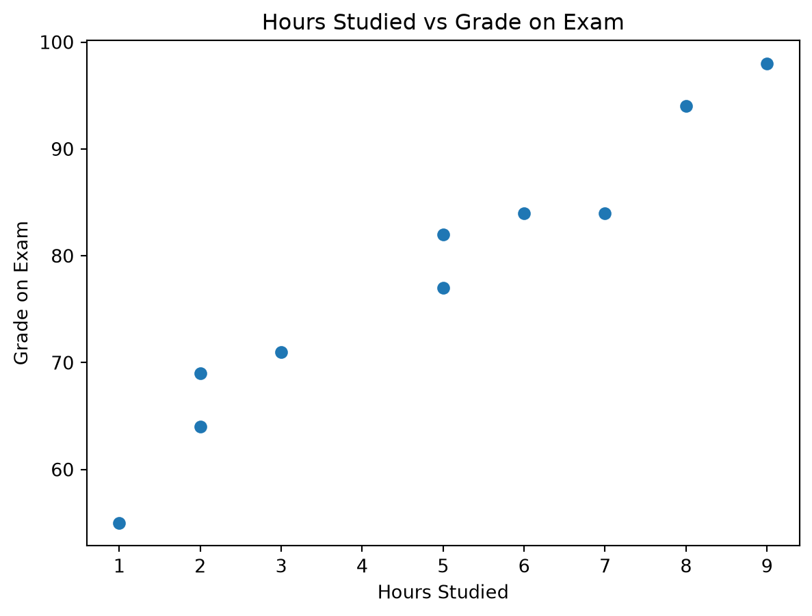
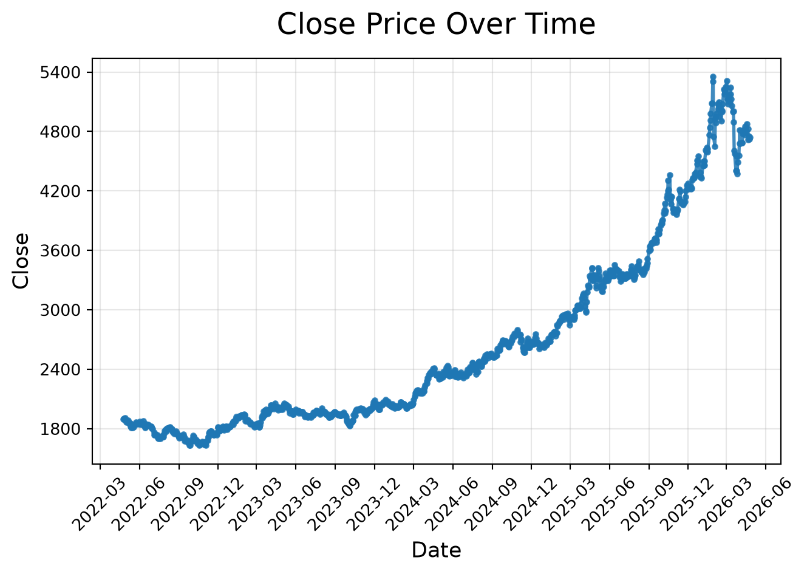

Session 12: Simple Linear Regression and Forecasting
Simple Linear Regression
Overview
This module introduces one of the most important concepts in data analytics: understanding relationships and forecasting trends.
We will go from:
Intuition \(\rightarrow\) how relationships work
Manual calculations \(\rightarrow\) how models are built
Python implementation \(\rightarrow\) how analysts actually use it
Business applications \(\rightarrow\) how decisions are made
Time series forecasting \(\rightarrow\) how to predict the future
Learning Objectives
After this session, you will be able to:
Understand what linear regression is conceptually
Manually compute regression coefficients
Interpret regression outputs in a business context
Build regression models in Python
Apply regression for trend analysis
Understand time series structure
Perform basic forecasting using ARIMA and Prophet
Intuition of Relationships
In analytics, we often ask: “If X changes \(\rightarrow\) what happens to Y?”
Examples:
Marketing spend \(\rightarrow\) Sales
Price \(\rightarrow\) Demand
Discount \(\rightarrow\) Conversion rate
Hours studied \(\rightarrow\) Exam score
Visual Thinking
We will use the hours studied vs grade example from the picture you provided.
Hours Studied
Grade on Exam
2
69
9
98
5
82
5
77
3
71
7
84
1
55
8
94
6
84
2
64
import numpy as npimport matplotlib.pyplot as plthours = np.array([2, 9, 5, 5, 3, 7, 1, 8, 6, 2], dtype=float)grades = np.array([69, 98, 82, 77, 71, 84, 55, 94, 84, 64], dtype=float)plt.scatter(hours, grades)plt.xlabel("Hours Studied")plt.ylabel("Grade on Exam")plt.title("Hours Studied vs Grade on Exam")plt.show()

We observe:
As hours studied increase, exam grades also tend to increase
The relationship is positive
The data does not fall perfectly on one line, which is normal in real life
This makes the example ideal for introducing both intuition and model evaluation
Suggested use of the picture you shared:
Keep the screenshot as the raw real-world input at the start of this section, then place the clean table and the scatter plot right after it. It works especially well here because students can visually understand the pattern before seeing any formulas.
Linear Model
The prediction equation for a simple linear regression is:
\[
\hat{Y} = \beta_0 + \beta_1 X
\]
A more complete statistical view is:
\[
Y = \beta_0 + \beta_1 X + \varepsilon
\]
Where:
\(Y\) is the actual observed outcome
\(\hat{Y}\) is the predicted outcome
\(X\) is the input variable
\(\beta_0\) is the intercept
\(\beta_1\) is the slope
\(\varepsilon\) is the part of the outcome the model does not explain
In this lesson:
\(X\) = hours studied
\(Y\) = grade on exam
Interpretation
\(\beta_1\) tells us how much \(Y\) changes when \(X\) increases by 1 unit
\(\beta_0\) tells us the predicted value of \(Y\) when \(X = 0\)
Example:
If \(\beta_1 = 5\), then each extra hour studied is associated with about 5 extra grade points
If \(\beta_0 = 55\), then the model predicts a grade of 55 for a student who studied 0 hours
Manual Linear Regression
Our goal Find the best line that fits the data.
Optimization Problem
We minimize:
\[
\sum (y_i - \hat{y}_i)^2
\]
This is called Least Squares.
To understand it:
\(y_i\) is the actual value
\(\hat{y}_i\) is the predicted value
\((y_i - \hat{y}_i)\) is the residual, or prediction error
Squaring makes all errors positive and penalizes larger errors more strongly
So the model is searching for the line that leaves the smallest total squared error.
TV \(\rightarrow\) Sales: TV is the strongest single-channel predictor in this sample
Radio \(\rightarrow\) Sales: Radio alone still shows a positive relationship with sales
Social Media \(\rightarrow\) Sales: Social media alone is also positively associated with sales
Important
Do not compare slope sizes blindly across channels, because the channels are on different scales. A slope of 40 for social media does not automatically mean social media is “better” than TV. The unit sizes differ, and the variables also move together.
Holding the other channels constant, TV remains strongly positive
Radio and social media become slightly negative in this sample
That does not automatically mean radio or social media are harmful
More likely, the predictors are overlapping so strongly that the model struggles to separate their unique contributions cleanly
This is a classic multiple-regression interpretation issue: a variable can look positive in a simple regression and unstable in a multiple regression when predictors are highly correlated.
Multiple regression with the influencer variable
influencer is categorical, so we need dummy variables.
Macro, Micro, and Nano are dummy adjustments relative to Mega
Model fit:
\(R^2 \approx 0.9994\)
RMSE \(\approx 2083.33\)
How to interpret the coefficients:
TV = 3.77
Holding the other variables constant, an extra $1 in TV spend is associated with about $3.77 more sales
Radio = -0.42 and Social Media = -0.38
These slightly negative coefficients should be interpreted very carefully. In this tiny sample, the predictors are highly correlated, so these signs are more likely reflecting multicollinearity and overlap than a real negative business effect
Influencer dummies
These are shifts relative to Mega
Macro = -3562.83
Micro = +3596.86
Nano = +1501.38
Important caution:
Do not over-interpret the influencer coefficients here:
Macro appears only once
Micro appears twice
Nano appears twice
Mega appears seven times
So this is a good tutorial example for how to include a categorical variable, but not a strong basis for making real strategic claims.
Example 2 | Price → Demand
For this example, we generate realistic synthetic data with a negative relationship.
Gold price data often has missing values on weekends and holidays. The dataset we are using has been cleaned to include only business days, so there are no missing dates. This allows us to focus on the modeling aspect without needing to handle missing data in this example.
import pandas as pdfrom os.path import joinPATH ='../data/regression/time_series'
Befor visualizing, we should sort the combined DataFrame by date to ensure the time series is in the correct order.
ts_combined = ts_combined.sort_values(by='Date')
import matplotlib.pyplot as pltimport matplotlib.dates as mdatesfrom matplotlib.ticker import MaxNLocatorplt.plot( ts_combined["Date"], ts_combined["Close"], linewidth=2, marker="o", markersize=3, alpha=0.85)plt.title("Close Price Over Time", fontsize=18, pad=15)plt.xlabel("Date", fontsize=13)plt.ylabel("Close", fontsize=13)# Improve x-axis date formattingplt.gca().xaxis.set_major_locator(mdates.MonthLocator(interval=3))plt.gca().xaxis.set_major_formatter(mdates.DateFormatter("%Y-%m"))# Reduce number of y-axis labelsplt.gca().yaxis.set_major_locator(MaxNLocator(nbins=8))plt.xticks(rotation=45)plt.grid(True, alpha=0.3)plt.tight_layout()plt.show()

As you can see, the gold price data shows a clear upward trend over the two-year period, with some fluctuations along the way. This kind of pattern is common in financial time series, where we often see a combination of trend and noise. In the next sections, we will explore how to model this time series and make forecasts based on it.
Trend Analysis (Regression on Time)
Idea
Treat time as X:
\[
Close = \beta_0 + \beta_1 \cdot Time
\]
This is not yet a full time-series model, but it is a very useful bridge from regression to forecasting.
Python Example
Create a time index variable that counts the business days from the start of the series
Fit a linear regression model using this time index as the predictor
How many previous observations should the model remember?
The \(d\) Parameter: Differencing
The second parameter, \(d\), represents the number of times the series is differenced.
Many real-world time series are not stationary. A stationary series has a relatively stable mean and variance over time. However, stock prices, sales, revenue, population, and website traffic often have trends.
ARIMA works best when the series is stationary, so we often transform the original series before modeling it.
Differencing means subtracting the previous value from the current value:
\[
\Delta y_t = y_t - y_{t-1}
\]
Instead of modeling the original values, the model uses the change from one period to the next.
For example, suppose we have this series:
Time
Value
1
100
2
110
3
125
4
140
The first difference is:
Time
Difference
2
10
3
15
4
15
So instead of asking:
What will the next value be?
the differenced model asks:
What will the next change be?
If \(d = 0\), the model uses the original series.
If \(d = 1\), the model uses first differences.
If \(d = 2\), the model differences the series twice, meaning it models the change in the changes.
In simple terms, \(d\) answers the question:
How many times do we need to remove trend from the data?
The \(q\) Parameter: Moving-Average Lags
The third parameter, \(q\), represents the number of moving-average lags.
This part of the model uses past forecast errors.
A forecast error is the difference between the actual value and the predicted value:
\[
\varepsilon_t = y_t - \hat{y}_t
\]
If the model made a mistake yesterday, that mistake may contain useful information for today’s forecast.
For example, an MA(1) model can be written as:
\[
y_t = c + \varepsilon_t + \theta_1 \varepsilon_{t-1}
\]
This means today’s value depends partly on today’s random shock and yesterday’s forecast error.
If \(q = 1\), the model uses one previous forecast error.
If \(q = 2\), the model uses two previous forecast errors.
In simple terms, \(q\) answers the question:
How many previous forecast mistakes should the model use to correct itself?
Interpreting ARIMA(1, 1, 1)
In this lesson, we use:
\[
ARIMA(1, 1, 1)
\]
This means:
Component
Meaning
Interpretation
\(p = 1\)
One autoregressive lag
The model uses the previous value.
\(d = 1\)
One difference
The model models changes rather than raw values.
\(q = 1\)
One moving-average lag
The model uses the previous forecast error.
So ARIMA(1, 1, 1) means:
First, difference the series once to remove trend. Then model the differenced series using one lag of the series and one lag of the forecast error.
Conceptually, the model says:
The next change in the series depends on the previous change and the previous forecasting mistake.
This is why ARIMA(1, 1, 1) is often a useful practical demonstration model. It is simple enough to explain, but it already contains all three main ARIMA ideas: memory, differencing, and error correction.